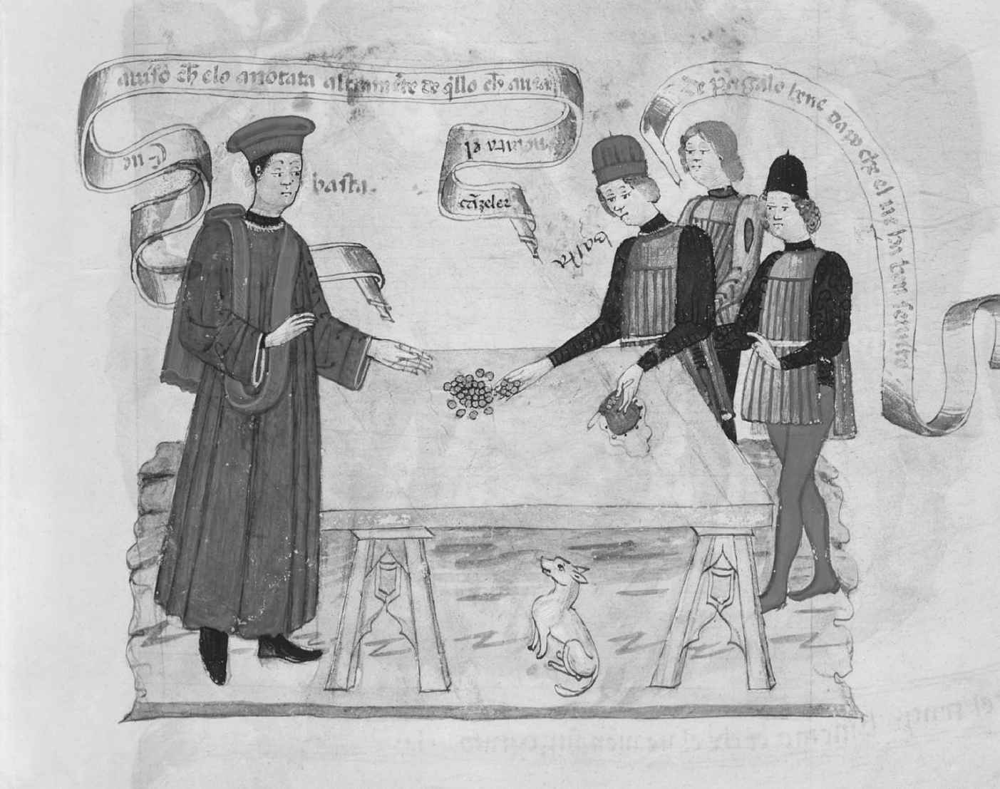

对腐败的任何严肃解释都必须着眼于整体。人的腐败有多种原因，即使可以找出主要动机，它也因人而异或有群体之别。假定存在某种根本的一般性解释，比如生性贪婪或逮到机会，这样的想法很天真。不过，我们还是有必要找出各种综合起来能解释腐败的影响因素，否则，试图遏制腐败就是徒劳的。本章关注的重点是个人及其与社会的关系，以及文化与腐败可能会有的关联。这里把各种因素彼此分开，纯粹是为了叙述方便；在现实世界中，它们互动、重叠，以复杂的方式彼此结合在一起。
这种互动观解释了本章和下一章对理论分析框架的选择。此种方法以安东尼·吉登斯的结构化理论为基础，该理论认为，我们既无法从个人的选择自由和行动自由（能动作用）的角度，也无法从人类身处的世界所决定的一切（结构）的角度，来充分解释人类行为。相反，人们所作的选择和决定，部分是基于自由意志，部分则受限于生活环境。这种相互作用的观念为本书的分析提供了支持，虽然通常不那么明显。
心理—社会因素
在分析心理—社会解释之前，我们需要理解这个词的含义。前半部分指向个人：心理学，即对心灵的研究，关注的是个人如何以及为何以现有的方式思考和行动。相反，社会学关注的是社会的组织方式和运行方式。心理—社会的方法把两者结合了起来：考察个人，也考察他们与社会环境的互动。
心理学关注的是个人，不过玄学派诗人约翰·邓恩的著名格言，即“没有人是一座孤岛”，在考察哪些可被视为纯粹个人因素时还是非常适用的。如此一来，假如我们在考察之初把“贪婪”确定为一个解释因素，显而易见的是，即使这一点也无法完全脱离社会环境。想要“更多”这一欲望与特定社会的标准相关；在富裕社会中，冰箱或电脑等许多物品被视为必需品，而在贫困社会中，它们会被视为奢侈品。
第二个因素也与个人在社会中所处的地位相关，即受人尊重和认可的需要。在《历史的终结及最后之人》一书中，弗朗西斯·福山提到了我们对thymos（从黑格尔那里借用的一个概念）的基本需求，这个古希腊词语指的是人想要获得认可的欲望。类似地，歌手菲尔·科林斯在歌曲《故事的两面》中唱到了街头的少年，少年之所以持枪，是因为手中无枪便难有尊重。如果腐败（比如受贿）意味着支出能力及与之相伴的社会威望得到提升，或者给予个人一种控制他人的感觉（比如通过提携反哺），那就可以部分地从thymos的角度得到解释。
与前述观点相关的是，某些个人之所以变得腐败，是出于自己的野心。如果向上流动的通道显得封闭，腐败（比如通过行贿进入大学，一旦当事人日后飞黄腾达，这种做法就变成了对障碍的“巧妙”应对）就能帮助野心勃勃的个人绕过路障。
在解释为何有些人会卷入有组织犯罪时，詹姆斯·芬克劳和埃林·韦林发明了“吸盘心态”一词，大意是指如果一个人被主流价值体系作为局外人看待，他或她再遵循该价值体系生活就是愚蠢的。对于腐败也可以提出类似观点。一个受到多数群体歧视的少数种族成员，如果想获得权威地位又不想从中获取私利，就会被视为失败者或“吸盘”。此种情形的一个变化形式是，有些人为了驱赶生活中的百无聊赖和千篇一律（忍受这种状态是另一个层面的“吸盘心态”）而变得腐败，以体验破坏规则的刺激。
还有一种犯罪行为理论有助于更好地理解腐败，即机会理论。顾名思义，这种观点认为，人往往会利用送上门来的机会，比如“在合适的时间处在合适的位置”。该理论可以和理性选择理论联系起来，就当前的讨论来说，理性选择理论从成本—收益分析的角度最容易理解。如果暴露的可能性极小，或者即使被发现并定罪也很可能只有一点小小的惩罚，腐败有望带来的丰厚回报就会使（无道德感的）利益最大化的个人涉身其中。
目前为止详述的所有因素，都以某种方式对个人形成正向激励。还没有说到的是反向激励。其中之一就是缺乏安全感。缺乏安全感有时纯粹是心理上的，是个人性格造成的，可能与童年时期经历的不安处境有关。但还有一种安全感的缺乏，与个人当前的社会处境有关。如果失业率正在上升，或者政府刚刚宣布要大幅减少公务员数量，有些官员就会想要利用现有的职务之便；不是因为野心或自大，而是想在还有能力时捞上一笔。这一现象可称为“松鼠的坚果”综合征 [6] 。
我们从上面这一点很自然地就过渡到了下面一点，即需求问题。在许多国力衰弱的国家，比如那些在革命之后正经历转型或处于冲突结束后阶段的国家，官员拿不满薪酬或薪酬发放不及时，更极端的甚至完全拿不到。在这些情形下，从事腐败行为至少在一开始是一种维持生存的应对方式。
第三个反向激励因素是来自他人，即同僚、上级或配偶的压力。就同僚的压力来说，对警察腐败的研究显示，那些加入腐败小团体的警察往往是以各种方式被迫加入集体腐败活动的；如果拒绝，就会受到排挤或遭到报复（包括暴力报复）的威胁。如果不揭发同僚的腐败，他们就成了同谋，这样自己也就腐败了。不管怎么说，这种形式的腐败最终是出于恐惧，而不是出于获得更多权力或物质财富的欲望。
恐惧因素也解释了为何某些警察对于自己明明知道的有组织犯罪行为不予告发。犯罪团伙有时会发出威胁，警察如果告发其活动，就会伤害他们的孩子或配偶。在此情形下，警察仍然是腐败的，他们出于私人原因而渎职了（即置家庭于国家和社会责任之先）。不过在这类情形下，警察的不作为如果被发现并受到指控，法官或上级的处置会比较温和，毕竟这属于白色或灰色腐败。
另一类不端行为也与恐惧有关，但通常被视为灰色或黑色腐败。在此情形下，某个身居要职的人由于受到胁迫而滥用职权，一般是落入了圈套。
另一种犯罪行为理论即标签理论，能够帮助我们更好地理解腐败原因。该理论的最初版本与霍华德·贝克尔有很大关系；后来的一个理论，即约翰·布雷思韦特的“羞辱”观，与之密切相关。标签理论的基本观点是，一旦国家或社会给人贴上罪犯的标签（或加以羞辱），他们很可能就会一直是罪犯，除非采取措施加以纠正。其中的主张是，对于初犯，至少是不那么严重的不端行为，最好不要作为罪犯对待，否则后面犯罪率就会上升；接纳比排斥更好。这个主张可以略作修改应用于腐败情形。比如，如果媒体一直渲染海关官员的腐败，言过其实，其中某些之前廉洁自律的人可能就会开始腐败，理由是“既然无论如何都不相信我们，就让他们见鬼去吧！”不被信任的感觉会强有力地推动人破坏规则。目前为止，我们关注的都是能够解释个人为何腐败的因素。我们从主流犯罪理论中借用的最后一个理论，探讨的问题却是为何更多的人并不 加入反社会活动。毕竟，如果理性选择理论是正确的，那么在抑制因素明显超过激励因素之前，无疑应该会有更多 的腐败。
在1969年的一本书中，特拉维斯·赫希提出了“控制理论”，在这一最早的提法中，他认为个人与群体之间关联的强度是解释行为的重要因素。若假定群体基本上是守法的（从广义上说），个人和群体之间的密切联系就能成为对个体的控制因素。相反，脆弱的联系则意味着个人更有可能追逐自身利益，而不考虑由此会给他人带来什么影响。在后来的一项分析中，赫希与米凯尔·戈特弗里德松联合提出了一种理论，并大胆地称之为一般犯罪理论。该理论同样聚焦于控制，只是更关注个人的自我控制。两人主张个人的自我控制部分地来自社会化过程，因此很明显，他们的观点与本书提倡的互动性结构化观点颇为契合。同样应该能明显看出的是，控制理论有助于解释为何有更多的掌权者并不违规地利用职务之便。
在结束心理—社会解释之前，还有一个概念几乎确定无疑是相关的但本质上又无法证明，那就是内在道德。根据许多哲学和宗教的观点，所有人都有天生的是非感，社会环境决定着我们在多大程度上向善还是为恶。
文化解释
为何西北欧的国家看起来比东南欧的国家腐败程度低得多，又为何多数欧洲国家看起来比多数拉丁美洲或非洲国家腐败程度要低？在拉丁美洲，为何巴巴多斯、智利和乌拉圭看起来比该地区的其他国家腐败程度要低，又为何博茨瓦纳成为撒哈拉沙漠以南的非洲国家中的亮点，被视为腐败最少的国家？一些分析人士试图从文化差异的角度来加以解释。我们还记得，文化在本书目前的语境下指的是一个社会中主流的价值、态度和行为。它们可能与以下因素相关联：宗教和哲学传统的影响、社会中的信任度、国家是否曾被殖民、不久前是否有过独裁统治。
从宗教和哲学传统开始，在由腐败印象指数（见第三章）衡量的印象腐败程度和主流宗教之间有着明显的相互关联。在人们印象中，新教国家往往比天主教国家腐败程度更轻，后者又被视为轻于东正教国家。
对于为何新教国家一般比天主教国家腐败程度更轻之类的问题，有一些有趣而别出心裁的联想，比如着眼于历史的理论，即新教的兴起是为了反抗天主教会的腐败，这种对腐败的厌恶历经数个世纪而延续下来；再比如一个事实，即天主教徒可以在忏悔室中卸下罪孽，新教徒却不得不为自己的罪孽承担个体责任。罗纳德·英格尔哈特等人提出了另一种解释，即层级更多的体制往往更为腐败，天主教就比新教层级更多。
但是，这种相互关联可能并不存在，模式也可能很有误导性。比如，人均国内生产总值、民主化程度、信任程度和国家总体治理水平，这些因素与印象腐败程度（以及实际经历的小型腐败）之间的关联性，至少不比宗教和哲学等文化变量与其关联性更弱。无疑，人口较少的国家在腐败印象指数中占“腐败程度最轻”国家的多数，说明国家的大小与腐败文化具有某种关联。然而，在最腐败的国家中也有小国，这就使我们不得不重新审视，至少是修正这一假定。
对于宗教传统有助于解释不同的印象腐败率，或者至少与之相互关联这一假设，学者丹尼尔·特赖斯曼进行了检验。在一篇对腐败原因的出色分析中，他发现虽然新教与腐败程度低紧密相关，在其他宗教传统中却无法找出这种密切的相关性。
文献中经常提到的第二种文化价值是对家庭和国家的态度。根据这种观点，在那些对亲人和朋友的忠诚（家庭主义）重于对国家的忠诚的文化中，某些形式的腐败，尤其是社会腐败，比在不那么以家庭为核心的文化中要更为普遍。如社会研究的许多方面所显示的，如何定义并衡量家庭主义的程度，会对研究项目的结果产生影响。无疑，相比于个人主义特征强烈的文化，大家庭特征明显的国家一般的确显示出更高的腐败率，因此这一因素可以部分地解释西北欧和东南欧（以及之前指出的新教和天主教）之间的差别。不过在此必须多加小心，因为大多数衡量技术关注的都是经济腐败而不是社会腐败。高度的经济腐败和高度的社会腐败之间可能有相关性，但这一点必须经由经验调查来确定。
对家庭、国家和当局的主流态度与国家的合法性有关。若公众基本上都相信国家，并赋予政权高度的合法性，很可能腐败就较少。不过，应该很容易看出的是，这是一个鸡生蛋和蛋生鸡的问题；如果大多数官员有正直的名声，国民就会更加信任当局。
不过，埃里克·乌斯拉纳表明，与印象腐败程度相关联的不仅是对当局的信任程度；我们对他人，尤其是陌生人的信任度，也是一个因素。基本上，社会信任度越低，腐败程度越高。
我们的第五个变量关注的是过去的历史对当前态度和行为的影响。有人主张，前殖民地更容易腐败。这个观点包含多层意思。利·加德纳主张，殖民地政府通常无力亲自收税，要依靠地方税务员，而后者往往从当地的部分人手中受贿，并不会照章征税；待到殖民力量撤走，这种做法已经根深蒂固，在后殖民时代延续下来。关于殖民主义的影响，另一个观点是，既然国家当局长期以来在当地人看来是从外部强加的，没有合法性，国民和部分地方官员在欺骗国家时就没有良心上的不安；同样地，这种态度一般也会延伸到后殖民时代的背景中。
殖民主义的影响或许有助于解释腐败程度，但其说服力是有限的。最最起码，这个观点是需要改进的。例如，有证据表明，前英国殖民地总体上比前法国或前葡萄牙殖民地腐败更少（仅仅是总体上，明显的例外包括尼日利亚和巴基斯坦），这可能意味着殖民时期国家政府的合法程度有别。另一个观点是，某些被视为帝国主义者的政权，比如苏联时期的俄罗斯，本身就留下高度腐败的印象；因此在一个所谓的殖民地中，比如在爱沙尼亚，许多人会回避腐败，以免让自己“堕落”到与殖民者为伍的地步。
许多帝国主义国家留给前殖民地的一个遗产是法律体系。按简单的二分法，这些法律体系一般分为普通法法系和民法法系。前者基于法律先例，常见于英语国家，而后者基于成文法，在欧洲大陆占据主流。有人指出，普通法法系国家比民法法系国家一般腐败更少。原因在于，前者的司法制度更独立于政治精英，使这些精英更不易卷入社会腐败，比如提携反哺。同时也因为，民法法系中司法制度不那么透明。其部分原因在于，本来可以对容易腐败的法官形成遏制的一般公众，由于陪审制的缺乏，在该法系中的作用被削弱了。
另一方面，正因为通常更独立于政治精英，普通法法系中的法官可能会发现，从私人企业中受贿更容易逃避处罚。耶鲁大学的苏姗·罗斯—阿克曼因此明智地认为，两种法系都有可能促成腐败；这一点是否会明显表现在法官群体身上，与其说取决于制度安排，不如说是由法官本身的操守和态度（司法文化，见图4）决定的。通常，这相应地又与他们所在国家的一般文化，即社会上对腐败行为的主流态度有关。
此处提到的司法文化又导向一个更宽泛的问题：社会上对法律的主流态度，即是否存在法治文化。目前为止有充分的证据表明，健全的法治文化与低腐败程度密切相关。相反，当局的高度专制则与高度腐败难分难解。
相比于民主国家，国家的蛮横行为在威权国家身上远为常见。正如身为殖民地的历史可能会影响特定社会中对腐败的态度，也影响其中腐败的规模，威权制度或极权制度的历史也会打下烙印，影响当代的价值观念。比如，部分由于商品短缺，人们被鼓励从事各种勾兑行为。行贿可以确保获得紧缺物品。另一种普遍做法是“布拉特”，在第一章我们简短考察过。按照阿廖娜·列杰涅娃对此的经典分析，“布拉特”就是：

图4 司法腐败由来已久
苏联和其他类似社会中的公民之所以想出复杂方式来避开制度，另一个原因在于制度过于封闭。列宁认为共产党员是由政治上最有觉悟的人（社会“先锋”）构成的，由此看来，理论上他们在发展党员时是极为严格的。然而，要在体制内求取进阶，入党几乎总是必要的。对于未来仕途上的贵人，许多人欣然拉拢关系，不嫌亲昵。
许多当代国家曾经或者现在仍是威权制，也存在一些容易滋生腐败文化的特征。其中多数曾是殖民地，而殖民遗产的影响我们已经考察过。除此之外，在威权制下精英通常捞取国家财富并藏匿至难以查清的海外银行账户，同时剥夺国民调查和公开批评的权利，从而败坏风气——这一事实本身就降低了大众对制度的信任，从而降低了制度的合法性。如此一来，国民和官员对破坏体制规则都不那么愧疚，在机会来临时都会利用体制。
对于腐败的经验研究，近年来有一个更具想象力的例子，支持如下观点：某些国家的官员比他们其他地方的同行们要腐败得多。雷蒙德·菲斯曼和爱德华·米格尔研究了1997至2005年间纽约市外交官的非法停车行为，总结称“在非法停车和外交官的母国对腐败的当前态度之间有密切关联。即使身处数千英里之外，外交官们的行为方式也极易让人想起他们祖国的官员们”。这当然属于对腐败的文化解释。
腐败的社会建构
在特定环境（国家或地区）中对腐败文化的任何综合分析，都需要考察腐败问题是如何形成或建构的。分析人士如安德拉斯·绍约断言，许多转型国家（言下之意即发展中国家）中的腐败“问题”被虚伪的西方国家出于既得利益考虑而夸大了。不可否认的是，发达国家的确存在许多腐败，但绍约说转型国家的公民不像西方批评者声称的那么关心腐败，可能言过其实；调查结果显示，他夸大了公众对腐败的淡漠程度。
不过，腐败的社会建构还有一个方面值得一提。一些分析人士合理地强调了一个事实，即腐败官员往往比“一般”罪犯受到的处理宽大得多，并把这个事实与我们为不同的犯罪贴上的类型标签关联起来。如此一来，有组织犯罪一般就被视为“下层社会”的常见现象，而广义上的白领犯罪，包括许多形式的腐败，则被视为“上层社会”犯罪。事实上，窃贼可能偷少数几个人的钱并给他们留下心理创伤，而腐败官员（或者经理，如果对腐败进行宽泛定义的话）可能对数百、数千，甚至在极少数情况下对数百万人造成严重的负面影响；相对于犯罪的影响来说，这种标准不一的处罚可能极为不当。在这里，认为上层社会犯罪不如下层社会犯罪那么严重的社会主流态度（文化），有助于解释为何对前者的惩罚一般比对后者的更为宽大；更轻的惩罚意味着官员破坏规则时顾虑更少。
我们已经表明，个人和文化两方面的许多特征有助于理解各国之间不同的腐败率和腐败类型。必须警惕的是，这些解释不能推得太远；比如，具有类似宗教传统的国家腐败程度可能截然不同，而许多未成年人虽然没有像成年人那样卷入犯罪活动或其他形式的严重反社会行为，却依然有过痛苦的经历。
最后要说的一点是，我们要同样警惕，不能过于坦然地接受精英甚至学者的一类主张，即外人所批评的“腐败”只不过是特定国家的文化的一部分，其他人谴责“传统做法”是不妥当的。比如，就腐败问题写过多部专著的马来西亚社会学家赛义德·侯赛因·阿拉塔斯就批评部分西方人，这些人声称腐败在发展中国家比在发达国家更受到容忍，因为它是发展中国家文化的一部分。对于阿拉塔斯来说，这种立场是傲慢的，他呼吁对腐败要一致谴责。